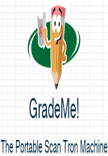

Projects
Entrepreneur Project 2017 : May 8, 2017 - May 22, 2017

Course: AP Computer Science Applications
Partners: Vikram Rajan, James Wang
The Entrepreneur Project is a project designed for students in all engineering classes. This project was assigned to us get a sense of how to sell a useful product to companies and other venture capitalists. Our task was to think of a problem that exists in the world and design a solution that addresses it. My group brainstormed and researched and we finally came up with a problem to tackle : the expensiveness of scantron scanners. These machines cost close to $6,000 yet are highly effective for fast grading. To keep the effectiveness of the scantron scanner but cut the cost, we created the software : GradeMe!. This software used two methods of scanning : phones and printers/scanners. Our primary scanning method was for scanners since there are problems with phone scanning. We realized not everyone has scanners so we would add the phone feature. Once the user scans the test it will act similar to a scantron scanner and grade the test. The target consumers for this project were schools that did not want to buy scantron scanners, teachers who could use this to grade tests whenever they desire without a scantron scanner, and students who are taking practice tests at home and want to grade themselevs. From this project, I furthered my knowledge in Java programming and gained a little exposure to Android Studio picture to text convertion. Besides technical skills, I also learned how to properly prioritize what needs to be done when as my team and I were taking our AP tests at the same time. Throughout this project, some leadership qualities demonstrated were resolving problems, teamwork, and problem-solving techniques. Overall, I feel like we undertook this project well and hope to continue it in the future.